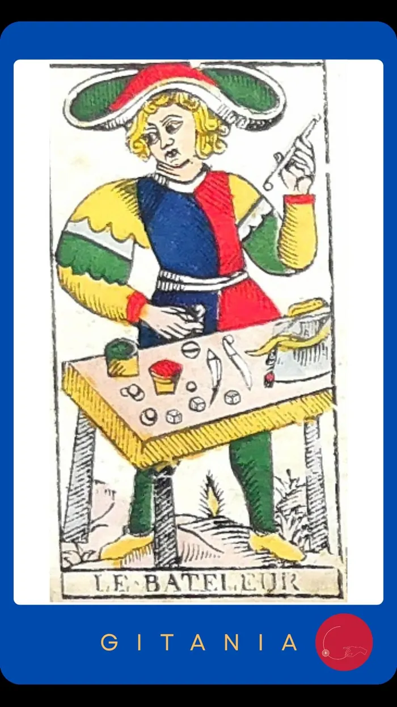

Historia del tarot
El tarot no nació para adivinar: era un juego de cartas de la nobleza italiana
Antes de ser un lenguaje simbólico o una práctica de lectura, el tarot fue un objeto de lujo para jugar. Esto es lo que dicen los museos y la investigación sobre su origen.

Mucha gente imagina que el tarot viene del antiguo Egipto, de un saber secreto que pasó de mano en mano durante milenios. La documentación cuenta otra historia, más terrenal y, a su manera, igual de fascinante. La Morgan Library & Museum de Nueva York, que conserva uno de los mazos del siglo XV más completos que existen, lo resume así: el tarot se creó en la Italia del siglo XV como un juego de cartas para la aristocracia, y no fue sino siglos después cuando se le asoció con secretos ocultos, con la adivinación y con el poder del destino.
Este blog empieza por aquí porque es el mito que más pesa sobre las cartas. Y también para dejar claro el método: cada entrada se apoya en fuentes que se pueden revisar (museos, catálogos, historiografía y periodismo serio) y, cuando hablamos de magia, esoterismo o creencias, las presentamos como lo que son: creencias, con respeto y sin burla.
Un mazo de lujo en las cortes del norte de Italia
Los mazos más antiguos que conocemos se agrupan bajo el nombre de Visconti-Sforza, por las familias Visconti y Sforza. La Morgan explica que estas cartas se pintaban a mano, por algunos de los mejores artistas de su tiempo, y que las suyas probablemente las hizo Bonifacio Bembo para la familia Visconti-Sforza. Su mazo es uno de los más completos que sobreviven del siglo XV.
Según un reportaje de Smithsonian Magazine (2025), los documentos históricos sugieren que el más antiguo de estos mazos, el incompleto Visconti di Modrone, con figuras pintadas sobre lámina de oro, se encargó como regalo de bodas para la hija de Filippo Maria Visconti, entonces duque de Milán, y su novio, Francesco Sforza. Es decir: no hablamos de un objeto de feria, sino de un regalo dinástico.
Cómo se fecha una carta de casi 600 años
Saber cuándo se hicieron estas cartas no es cuestión de intuición. El mismo reportaje cuenta el trabajo de Federica Pozzi, directora de los laboratorios científicos del Centro de Conservación y Restauración La Venaria Reale, en Turín. Su equipo colaboró con seis instituciones, entre ellas la propia Morgan, la Biblioteca de la Universidad de Yale y el Museo Metropolitano de Arte, y formó parte del primer equipo que usó técnicas de imagen avanzadas, como la espectroscopía de fluorescencia de rayos X, para encontrar capas invisibles en las cartas.
Por su parte, investigadores de Yale identificaron las marcas de agua de los papeleros y así fecharon uno de los mazos más antiguos del mundo en una franja muy estrecha: entre 1437 y 1442.
Las pistas de que se jugaba con ellas
Durante años, algunos historiadores pensaron que un mazo tan fino quizá era solo una obra de arte para mirar. La investigación de Pozzi apunta a otra cosa. Las cartas que sobreviven tienen señales de uso frecuente: bordes gastados, pigmentos perdidos, capas que se separan. Su laboratorio también confirmó que varias cartas son reposiciones, lo que sugiere que sus dueños querían conservar el mazo completo. Todo esto respalda la idea de que se hicieron para jugar.
La conclusión del reportaje es prudente: con esta evidencia, el mazo de tarot más antiguo quizá no fue mucho más que un juego de corte, un juguete exquisito para gente muy rica. Pero añade que el tarot nunca ha sido tan fácil de definir, ni su origen tan claro. Hay estudiosos, como el historiador del tarot Andrea Vitali, que proponen que las figuras formaban una scala mistica, una escalera moral que enseñaba preceptos a los jugadores. O que, al contrario, se burlaban de esos preceptos al dejar que locos y enamorados le ganaran a un papa. Son interpretaciones, no certezas.
Si quieres ver cuánto pesa el tarot como juego en la historiografía, basta un título: The Game of Tarot: From Ferrara to Salt Lake City, de Michael Dummett (1980). Son 600 páginas dedicadas al tarot como juego de cartas, y el subtítulo ya marca el punto de partida en una ciudad italiana: Ferrara.
Lo que tenían las cartas y lo que todavía no
El tarot que hoy conocemos suele tener 78 cartas: 56 numeradas, los arcanos menores, muy parecidas a las barajas comunes, y 22 triunfos, los arcanos mayores, cada uno con un personaje propio como el Loco, los Enamorados o el Ermitaño. Los mazos Visconti-Sforza ya ofrecen el primer esbozo de esa estructura, con muchos de los mismos palos y triunfos.
Pero esa forma no estaba fija. El Sola Busca, el mazo completo de 78 cartas más antiguo que se conserva, de finales del siglo XV, cambia los arcanos mayores por imágenes muy distintas: figuras de la Antigüedad y villanos famosos, como el emperador Nerón. El ocultista Peter Mark Adams lo llamó «obstinada e irremediablemente extraño», y para él esa rareza indica que las cartas tenían un propósito de fondo más allá del entretenimiento. Es su lectura. La evidencia material que vimos arriba apunta, sobre todo, al juego.
Más de tres siglos después: el giro hacia la cartomancia
Con el tiempo el juego se popularizó y su producción se trasladó a Francia, entre los siglos XVII y XVIII. Ahí apareció una nueva escuela de artistas, pensadores y lectores de cartas que empezaron a ver en el tarot un sentido oculto profundo.
En 1770, Jean-Baptiste Alliette, con el seudónimo de Etteilla, publicó un libro cuyo título se traduce más o menos como Cómo entretenerse con una baraja. Fue una de las primeras guías de cartomancia, es decir, de adivinación con cartas. Casi al mismo tiempo, el pastor francés Antoine Court de Gébelin dedicó parte de su obra Le Monde Primitif (1773-1782) a reescribir el origen del tarot: sugirió que las cartas guardaban un libro de los antiguos egipcios que se había salvado de las llamas. Smithsonian describe esa versión como completamente especulativa. Aun así, tuvo lectores ilustres, entre ellos Luis XVI, y desató una moda europea por todo lo egipcio.
De esa misma época viene una figura que hasta hoy acompaña al tarot: la de la gitana que lee las cartas. Court de Gébelin atribuyó a los «gitanos» haber conservado las cartas durante milenios y haberlas traído a Europa, y desde entonces esa imagen quedó unida al relato del tarot, como cuenta el reportaje de Smithsonian. Esa imagen pertenece al imaginario cultural del tarot, a sus creencias y a su poesía, más que a su origen documentado. El mismo reportaje recoge la precisión de Egil Asprem, profesor de la Universidad de Estocolmo que estudia el papel de los romaníes en la historia europea de la magia: no hay evidencia de que tuvieran un papel en el origen de las cartas ni en su difusión. Separar el dato de la leyenda no le quita fuerza a esa figura. Gitania toma su nombre de ese imaginario, el de la lectora que interpreta imágenes y cuenta historias, y lo honra como lo que es: un símbolo cultural, no una genealogía.
Si contamos desde el mazo fechado entre 1437 y 1442 hasta el libro de Etteilla de 1770, pasaron más de tres siglos antes de que el tarot se convirtiera en una herramienta para adivinar.
Por qué importa saberlo
Nada de esto le quita valor a las cartas. Al contrario. En Milán, la historiadora del arte Cristina Dorsini, que hoy guía a los visitantes del taller Il Meneghello, lo dice así:
«[El tarot] era una cultura figurativa que nació aquí, en Italia, en Milán».Cristina Dorsini, citada en Smithsonian Magazine (traducción propia)
Esa es la clave: el tarot es, antes que nada, un sistema de imágenes. Más tarde llegaron otras capas. En 1933, el psiquiatra Carl Jung atribuyó la fuerza sugestiva de estas imágenes a que funcionan como «imágenes psicológicas», y después vinieron el movimiento New Age y miles de mazos nuevos. La investigadora Helen Farley, citada en el mismo reportaje, lo llama «un espejo de la sociedad en la que se usa». De todo eso hablaremos en las próximas entradas.
Saber de dónde vienen las cartas cambia la pregunta. Ya no se trata de qué va a pasar, sino de qué despierta en ti una imagen pintada hace casi seis siglos para jugar.
Fuentes
- The Morgan Library & Museum, «Visconti-Sforza Tarot Cards», colección en línea. themorgan.org/collection/tarot-cards
- Dummett, Michael. The Game of Tarot: From Ferrara to Salt Lake City. Londres: Duckworth, 1980. ISBN 0715610147. Ficha: Open Library
- Last, John. «The Colorful History of Tarot Is as Mesmerizing as the Decks Themselves». Smithsonian Magazine, julio-agosto de 2025. smithsonianmag.com
Las citas de Dorsini, Adams, Asprem, Jung y Farley provienen del reportaje de Smithsonian Magazine; las traducciones al español son nuestras.